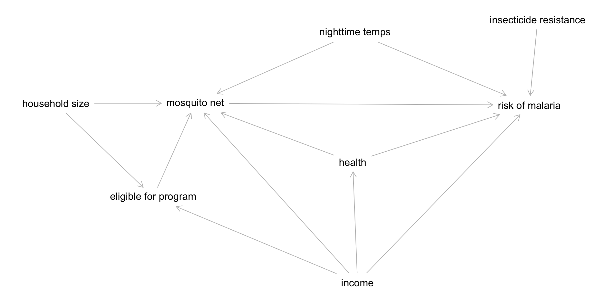

01:00
Causal Inference Workshop
Eldoret, June 2023
Eric Green
Today’s Agenda
| Time | Topic |
|---|---|
| 10:00-10:30 | The challenge of causal inference |
| 10:30-11:00 | Confounder control and causal diagrams |
| 11:00-11:10 | ☕️ Coffee/tea break |
| 11:10-12:00 | Malaria DAG |
Thursday and Friday ü§ù
Available for 1-on-1s or small group consultation. Sign-up for a slot at ghr.link/meeting-eld23
Observational Findings
Ding et al. (2015) conducted a pooled analysis of three large prospective cohort studies of health professionals in the U.S. (95% white) followed for up to 36 years:
Higher consumption of total coffee, caffeinated coffee, and decaffeinated coffee was associated with lower risk of total mortality…Relative to no consumption of coffee, the pooled hazard ratio for death was 0.95 (95% confidence interval [CI], 0.91–0.99) for 1.0 or less cup of total coffee per day.
In other words, the sort of people who drink a cup of coffee daily have a 5% lower risk of dying over 2 to 3 decades.
Causal Deniability
Does this mean that coffee prevents death? The study authors say no. But also, maybe!
Step 1: Avoid the word “causal” and warn that correlation is not causation.
…given the observational nature of the study design, we could not directly establish a cause-effect relationship between coffee and mortality.
Causal Deniability
Does this mean that coffee prevents death? The study authors say no. But also, maybe!
Step 1: Avoid the word “causal” and warn that correlation is not causation.
Step 2: Ignore the warning and make policy or health recommendations based on a causal interpretation of the findings.
…coffee consumption can be incorporated into a healthy lifestyle…moderate consumption of coffee may confer health benefits in terms of reducing premature death.
So which is it, a non-causal association or a causal effect?
Hernán (2018) argues that scientists need to stop the charade:
We need to stop treating “causal” as a dirty word that respectable investigators do not say in public or put in print. It is true that observational studies cannot definitely prove causation, but this statement misses the point…
According to Hernán, the point is that we have to be clear about our scientific goals and use language that reflects these goals.
What is our goal? What do we want to know?
A. Whether the sort of people who drink a cup of coffee daily have a lower risk of dying
B. Whether drinking a cup of coffee daily lowers the risk of dying?
What is our goal? What do we want to know?
A. Whether the sort of people who drink a cup of coffee daily have a lower risk of dying
B. Whether drinking a cup of coffee daily lowers the risk of dying?
To answer this question we need causal inference
A. Whether the sort of people who drink a cup of coffee daily have a lower risk of dying
B. Whether drinking a cup of coffee daily lowers the risk of dying?
Causal Inference
Causal Inference
Causal inference is what we do when we identify and estimate the causal effect of some proposed cause on an outcome of interest.

Counterfactual Thinking
Causal inference is an exercise in counterfactual thinking, full of “what if” questions about the road not taken.
A counterfactual is the hypothetical state of a “what if” question. With counterfactual thinking, there is what actually happened, and then there is the hypothetical counterfactual of what would have happened, counter to fact, under the alternative scenario. The difference between what did happen and what would have happened is a known as the causal effect.
Back to Reality
We’re not all knowing, of course, and we only get to observe one potential outcome for each person. This means we have to estimate the ATE by comparing people like Robert who take the road less traveled to people who take the road more traveled. But how do people come to take one road versus the other?
01:00
Who Gets “Treated”?
Let’s consider two scenarios:
- Travelers are randomly assigned to a road. They come to the fork in the road and pull directions out of a hat.
- Travelers select a road themselves. They go with their gut and all happen to pick the road that maximizes their individual happiness.
Randomization Neutralizes Selection Bias…
The simple difference in outcomes between groups consists of the average treatment effect + bias. Under perfect randomization, there is no bias, so the difference in outcomes is just the ATE.
…But Randomization is Not Always Possible or Maintained
Most research is non-experimental, or what many would call observational. Selection bias is always a concern in these studies. Our only defense against being fooled by selection bias is research design and statistical adjustment. As Cunningham (2020) states:
One could argue that the entire enterprise of causal inference is about developing a reasonable strategy for negating the role that selection bias is playing in estimated causal effects.
Causal Inference Methods
Matthay et al. (2020) divide non-experimental approaches to causal inference into two main buckets: confounder-control and instrument-based.1
Confounder-control is characterized by the use of statistical adjustment to make groups more comparable.
Instrument-based studies, sometimes called quasi-experimental designs, estimate treatment effects by finding and leveraging arbitrary reasons why some people are more likely to be treated or exposed.
Causal Diagrams and Confounder Control
Data Are Dumb
As Pearl and Mackenzie tell us in the Book of Why, cofounder control is not just an exercise in statistics because data are profoundly dumb. A dataset cannot tell us which variables to adjust for, or what is a cause and what is an effect. For that we need information that lives outside of statistical models. We need causal models that are informed by domain expertise (McElreath, 2020).
DAG
02:00
Effect Identification
Next we need to determine which paths are good and which are bad (Huntington-Klein, 2021). “Good paths” identify our research question. “Bad paths” are the alternate explanations for the causal effect that we need to close. In our example DAG, as in many DAGS, good paths often start with an arrow exiting the proposed cause and bad paths have arrows entering the proposed cause.
01:00
Simulated Example (ATE=1.5)
☕️ Coffee/tea break
10:00
Malaria Example
Draw a DAG with a Partner
The research question is:
Does using a mosquito net decrease an individual’s risk of contracting malaria?
Imagine that you can collect data on environmental factors, individual health, and household characteristics, but you cannot randomly assign households to receive or use mosquito nets. You have to answer this question with an observational study.1
What is in your DAG?
03:00
List the Pathways
There is a direct path between mosquito net use and the risk of malaria, but the effect is not causally identified due to several other open paths. List all of the paths and find which open paths have arrows pointing backwards into the mosquito net node.
03:00
Two Shortcuts
Drawing DAGs by hand is a good learning exercise, but there is an easier way:
- Draw your DAG on DAGitty.net
- Copy the code
- Paste the code into R
- In R use the {
dagitty} package to analyze your DAG
Paste Code into R
# Load packages
library(dagitty)
# 'content between quotes' pasted from DAGitty.net
mosquito_dag <- dagitty('dag {
bb="0,0,1,1"
"eligible for program" [pos="0.303,0.552"]
"household size" [pos="0.222,0.393"]
"insecticide resistance" [pos="0.623,0.251"]
"mosquito net" [exposure,pos="0.338,0.393"]
"nighttime temps" [pos="0.471,0.273"]
"risk of malaria" [outcome,pos="0.616,0.396"]
health [pos="0.469,0.493"]
income [pos="0.473,0.697"]
"eligible for program" -> "mosquito net"
"household size" -> "eligible for program"
"household size" -> "mosquito net"
"insecticide resistance" -> "risk of malaria"
"mosquito net" -> "risk of malaria"
"nighttime temps" -> "mosquito net"
"nighttime temps" -> "risk of malaria"
health -> "mosquito net"
health -> "risk of malaria"
income -> "eligible for program"
income -> "mosquito net"
income -> "risk of malaria"
income -> health
}'
)
plot(mosquito_dag)
Identify Open Paths
Heiss demonstrates how to use {dagitty} package to test assumptions, list pathways, and identify the minimal adjustment sets.
$paths
[1] "\"mosquito net\" -> \"risk of malaria\""
[2] "\"mosquito net\" <- \"eligible for program\" <- income -> \"risk of malaria\""
[3] "\"mosquito net\" <- \"eligible for program\" <- income -> health -> \"risk of malaria\""
[4] "\"mosquito net\" <- \"household size\" -> \"eligible for program\" <- income -> \"risk of malaria\""
[5] "\"mosquito net\" <- \"household size\" -> \"eligible for program\" <- income -> health -> \"risk of malaria\""
[6] "\"mosquito net\" <- \"nighttime temps\" -> \"risk of malaria\""
[7] "\"mosquito net\" <- health -> \"risk of malaria\""
[8] "\"mosquito net\" <- health <- income -> \"risk of malaria\""
[9] "\"mosquito net\" <- income -> \"risk of malaria\""
[10] "\"mosquito net\" <- income -> health -> \"risk of malaria\""
$open
[1] TRUE TRUE TRUE FALSE FALSE TRUE TRUE TRUE TRUE TRUEIdentify Minimal Adjustment Set
This tells us that we only need to control for health, income, and nighttime temps to identify our causal effect of interest (nets -> malaria risk). We see the same on DAGitty.net.
Simulated Data
Heiss simulated data from 1,752 households to show that mosquito nets cause a reduction in malaria risk of 10 points.
# A tibble: 1,752 × 10
id net net_num malaria_risk income health household eligible temperature
<dbl> <lgl> <dbl> <dbl> <dbl> <dbl> <dbl> <lgl> <dbl>
1 1 TRUE 1 33 781 56 2 FALSE 21.1
2 2 FALSE 0 42 974 57 4 FALSE 26.5
3 3 FALSE 0 80 502 15 3 FALSE 25.6
4 4 TRUE 1 34 671 20 5 TRUE 21.3
5 5 FALSE 0 44 728 17 5 FALSE 19.2
6 6 FALSE 0 25 1050 48 1 FALSE 25.3
7 7 TRUE 1 19 1146 65 3 FALSE 27.4
8 8 FALSE 0 35 1093 75 5 FALSE 29.8
9 9 FALSE 0 32 1037 60 3 FALSE 27.6
10 10 FALSE 0 40 828 36 3 FALSE 21.3
# ℹ 1,742 more rows
# ℹ 1 more variable: resistance <dbl>Naive vs Adjusted
library(modelsummary)
library(gt)
model_naive <- lm(malaria_risk ~ net, data = mosquito_nets)
model_adjusted <- lm(malaria_risk ~ net + income + temperature + health,
data = mosquito_nets)
# Heiss's appropriate warning:
# Making confounding adjustments with linear regression will result in properly identified causal relationships only under very specific circumstances.
# See https://www.andrewheiss.com/research/chapters/heiss-causal-inference-2021/10-causal-inference.pdfRecommended Reading
- Scott Cunningham’s “Causal Inference: The Mixtape”
- Nick Huntington-Klein’s “The Effect: An Introduction to Research Design and Causality”
- Richard McElreath’s “Statistical Rethinking”
- Morgan and Winship’s “Counterfactuals and Causal Inference: Methods and Principles for Social Research”
- Hernán and Robins’, “Causal Inference: What If”
- Daniel Westreich’s, “Epidemiology by Design”
Thursday and Friday ü§ù
Available for 1-on-1s or small group consultation. Sign-up for a slot at ghr.link/meeting-eld23
Slides and Code
Slides: https://ghr.link/ws-eld23-ci
Code: https://github.com/ericpgreen/ghr_workshops